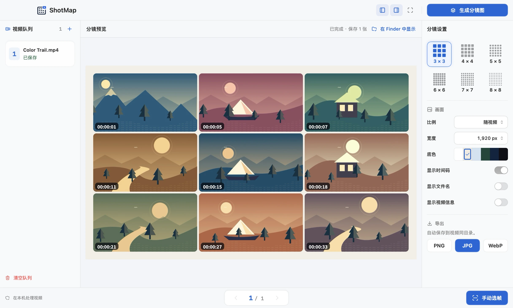

在 Mac 上将 MP4 生成 3 × 3 分镜图
从一段视频自动选取九帧，拼成一张 JPG。
示例使用 macOS 13 或更高版本上的 ShotMap 0.2.20，以及一段 36 秒、960 × 540 的 Color Trail.mp4。请把视频放在有写入权限的文件夹中。
- 把 Color Trail.mp4 拖入视频队列，也可以点击队列标题旁的 + 按钮添加。
- 在分镜设置中选择 3 × 3、随视频、1920 px 和 JPG。保留米白色底色，开启显示时间码，关闭文件名和视频信息开关。
- 点击生成分镜图。等队列状态显示已保存，确认预览中出现九张画面。

核对成品
点击预览上方的在 Finder 中显示。打开 Color Trail.mp4 同目录下的 JPG，确认九张画面带有时间码。